KubeCon 2023 上海：OpenTelemetry 采样分享
0. 前言
因为一直有关注 Kubernetes 相关的内容，在 4 月 19 日 KubeCon + CloudNativeCon Europe 2023 举行期间，就已经知道时隔 3 年，CNCF 的旗舰会议要回到国内线下举行了。恰逢最近半年学习重心转向 Observability，往往在起步阶段接触的新东西变多，就容易萌生一点 “自以为是” 和 “向别人分享” 的想法，于是提交了 CFP 碰碰运气。
7 月末得知 Proposal 被接受了，可以看得出来主办方是眷顾新人的。当时心情颇为复杂，一边是可以在更大的舞台跟众多开发者交流，一边是工作还没着落，很多准备材料都还处于原始的阶段。后续又熬过了2个月，熬出了只言片语，也不知道听众的接受度会有多高，所以到正式分享前都非常紧张。整个过程中有很多人给过我建议，特别需要感谢 Juraci Paixão Kröhling、Reese Lee、陆家靖老师和赵梓旗老师的 Review，带着这些的指导意见，我才得以进一步完善我的分享、输出观点。
Slides: Google Slides
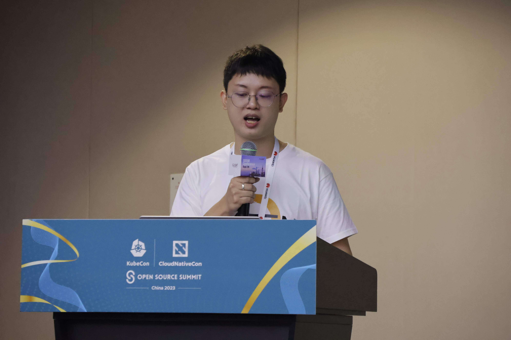
1. 可观测性之旅
云原生时代，微服务的使用越来越广泛，大家都将原有的单体服务拆分成小块。趣丸，一家主打兴趣社交和电子竞技的科技公司，亦是如此。在企业内，大部分的项目都运行在 Kubernetes 之上，搭配 Istio。对应用服务的观察，数据来源于服务内 SDK 上报、Istio 以及其他部署在节点上的 Agent。聚焦在分布式追踪这方面，我们每日产生超过百亿的 Span。通用的基础设施能提供非常多的监控指标，但仍有一些不起眼的角落缺乏足够的关注。为了覆盖这些场景，我们探索了 eBPF 的使用，尝试为各种没有 Istio 支持，或者出于各种原因缺乏埋点的应用提供请求级别的可观测性支持。
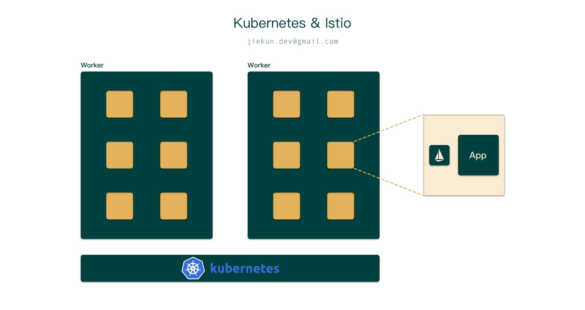
在所有这些探索的过程中，越来越多的数据被送入处理流程。例如，在一个规模中等的集群使用 eBPF 采集数据时，每天有 40 TiB 的 Trace 数据产生。使用这些数据是有成本的，我们必须考虑它是否值得：
- 有多少的 Trace 数据对问题排查有帮助？
- 怎样做才可以减少这些数据的产生呢？
OpenTelemetry 生态中提供了一些简单的手段应对上面的问题。
2. The OpenTelemetry Ways
在详细了解解决方案之前，我们花几分钟再介绍一下分布式追踪。
分布式追踪可以为用户描述一次请求所经历的过程，形成一张调用时序图，我们称这次调用过程调用链路为 Trace。而 Trace 由每个服务或者说服务处理一个请求的过程组成，这些过程称为 Span。下图中，这次调用产生了 4 个 Span，4 个 Span 组成一条 Trace。
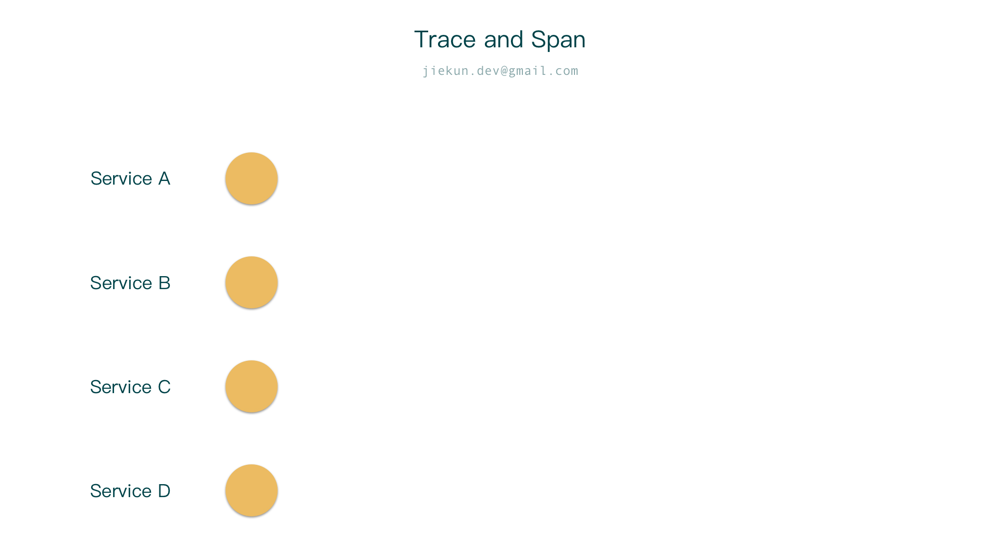
一条 Trace 中包含了很多信息，包括各个 Span 的耗时、标记位、自定义的 Key-Value 属性等等。Trace 是由不同服务上报的 Span 串联而来的，如果去做筛选、采样，让每天产生的 1000 万条 Trace 实际上只保留下来 1 万条，可以怎样实现呢？
第一种简单的方法，当请求抵达整个链路中第一个服务时，这个服务为这次请求生成一个独一无二的 Trace ID，以及其他的标记位，这些信息会贯穿整次请求。标记位中包含采样标记位，由服务依照一定的概率或者规则生成，代表要采样或者不采样。Trace ID 、标记位和其他上下文信息通过 RPC Header、Metadata 等方式传播给后续的服务，后续服务遵循第一个服务的采样决定，也随之采样上报或不上报。这种采样的方式称为头部采样。
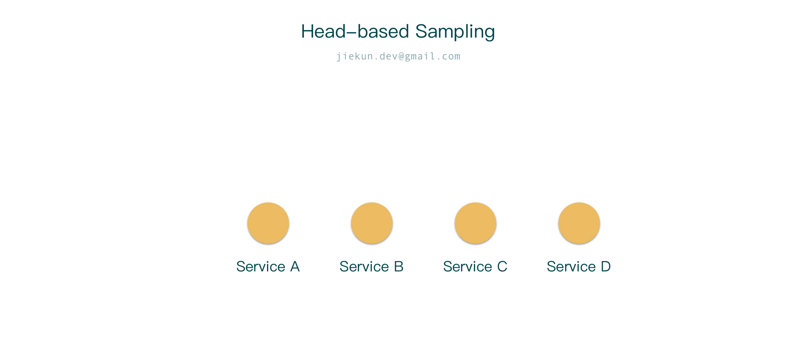
头部采样的特点在于，它是由头部服务，或者说第一个产生的 Span 决策的，传播至后续的 Span，整个采样决策发生客户端 SDK 层面，仅有少量被采样的数据允许被发送出去，因此，后续的处理流程中也只有少量数据流转、存储、展示。
头部采样最大的问题在于第一个 Span 的视野非常有限，无法预知未来会发生什么，也就无法依照整个请求是否有错误、是否执行时间过长来做决策。
为了解决这些问题，我们也可以把所有数据都上报，交由一个中间平台暂存、清洗，再决定保留还是丢弃整条 Trace。如下图所示，当请求抵达时，每个服务都将他自身产生的 Span 发送至 OpenTelemetry Collector，Collector 上的尾部采样组件在接收到第一个 Span 后，会等待一段时间（如 5 秒）以继续收集来自其他服务的、具有相同 Trace ID 的 Span。等待结束后，大量 Span 按照 Trace ID 归类，然后对同一个 Trace ID 下的 Span 进行遍历，以检查其中是否包含错误信息、累计耗时是否超过阈值等，有依据地筛选高价值的 Trace 进入后续的流程。
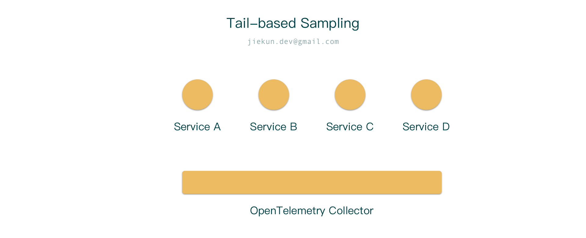
这种采样的模式称为尾部采样，它由 Collector 依据完整 Trace 的信息进行决策，决策的依据比头部采样丰富很多。但是由于需要承载大量临时数据，所以对基础设施要求很高。它的效果在于：
- 持久化的数据有依据、有规律、有价值；
- 减少了展示有价值数据所需的成本，例如存储资源，并且对提高查询速度也有帮助。
需要注意的是，在实际部署中，往往会存在多个 Collector 节点，而同一个 Trace 的不同 Span 是由不同服务产生的，这些服务位于不同地方，尾部采样要求他们都落入相同的 Collector 节点，那么必然需要一层负载均衡架设在 Collector 之前，依照 Trace ID 进行转发。这些负载均衡器可以是另一堆 OpenTelemetry 的 Collector，可以是以 Deployment 或 DaemonSet 形式部署的；也可以直接集成在 Client SDK 中。
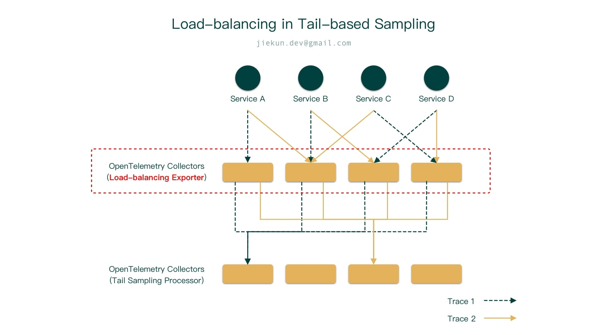
以上就是 OpenTelemetry 提供的采样、减少 Trace 数量的现成手段，你可能想知道实施他们需要多少成本，在下一小节中，我们将以一个 Demo 为例进行简要分析。
3. 资源使用
为了直观对比头部采样和尾部采样的差异，我们准备了如下图所示的系统，包括：
- 可配置的 Trace 生成器；
- OpenTelemetry Collector；
- OTLP 协议的 Trace Receiver。
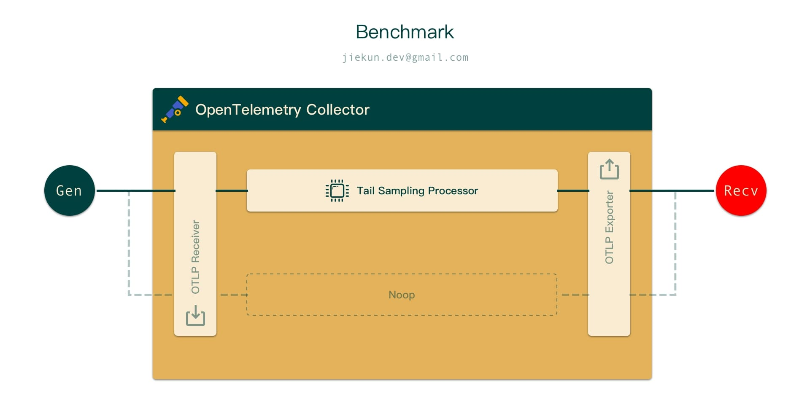
Trace 生成器自然是根据我们的需要生成 Span；Collector 用于处理或不处理数据；这些数据最后会被送往 Receiver，进行统计和分析。每个组件的的资源使用量被限制在 4 CPU 和 8 GiB 内存。
在生成器端，有 1% 和 100% 的概率进行上报，模拟头部采样的情况。当生成器 100% 上报时，会由 Collector 暂存数据 5 秒，然后对包含错误和长耗时的 Trace 进行尾部采样。另外还有一组对照组，Collector 不进行尾部采样，直接将所有数据送往 Receiver。所有测试都会执行多次，平均每次处理超过 40 万个 Span，2 万条 Trace。
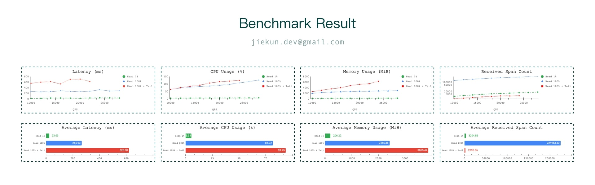
在全流程耗时的比较中，可以看到不同采样设计的耗时差异比较大，头部采样 1% 时平均为 20ms，头部采样 100% 时则上涨到了 260ms，在进一步加入尾部采样后，耗时在 600ms 左右，在压力进一步增大时缺少尾部采样的延迟数据是因为其他方面的指标已经超过临界值，所以无法再记录数据。结果很好理解，不同头部采样比例的耗时与每秒发送的 Span 数量是成正比的，正好是 10 倍的关系，而尾部采样中，我们配置了针对错误和耗时的 2 个采样策略，每个策略均会被执行、遍历所有 Span，因此需要一些额外的时间处理，数据才能抵达 Receiver。
在 CPU 使用率方面，1% 头部采样与另外两种采样方案的差别在 15-20 倍左右。当数据 100% 上报时，有无进行尾部采样对 CPU 使用率的影响相对小很多，只有 10% 的上涨。可以猜测，CPU 有更多的时间花在对上报数据的序列化、反序列化等等过程，而非采样决策本身。
我们之前也说过尾部采样需要更多的基础设施资源，这在内存上体现得比较明显。随着每秒上报数量的不断增加，在每秒上报超过 20000 Span 之后，实施尾部采样时所需的内存就超过了 7 GiB，已经到达组件的内存上限了，所以也出现了延迟大幅上涨的情况。相比来说，头部采样 1% 时内存压力就非常小了，仅使用了 200 MiB。所以，为了搭建尾部采样的体系，不少成本需要投资在内存上，例如，测试里处于临界的压力时，同样是 100% 上报，有尾部采样需要使用无尾部采样时接近 2 倍内存资源。
那么投资了这些资源之后，能获得什么呢？我们检查 Receiver 收到的数据，全量上报时平均收集到 22 万个 Span，而 头部采样 1% 和尾部采样只收集到了几千个 Span，数量是大幅减少的。他们之间的量级差距影响的是存储的成本，以及数据检索的性能。尾部采样与头部采样 1% 相比，在较为接近的数据量的前提下，能获取更多对排查有价值的数据，因为尾部采样的结果都是包含 Error 或者总耗时超过 5 秒的 Trace。
以上就是对几个测试场景的对比概述，基于这些结果，我们通常会推荐大家为每 8000 Span/s 的压力准备 1 CPU 和 2 GiB 的内存资源，这个恰好也是 OpenTelemetry 目前官方的推荐比例。但是这些数字受实际数据集的影响很大，Demo 更多是为了给大家基本的成本印象。
另外一个可能有助于控制成本的建议就是配置动态化、中心化，接受信息反馈。OpenTelemetry 和其他分布式追踪平台提供的 SDK 配置都是静态的。可观测性平台作为基础设施的提供方，需要有能力去实时控制用户的配置，这样有助于在发生问题的时候及时调整，防止单点拖垮整个平台。其次，可观测性平台通常也具有数据分析的能力，分析之后的结果可以用于动态修正链路的采样率，让每一分成本都花在更有意义的地方。
4. 更有趣的想法？
前面简要分析过一些现成的采样策略，他们能覆盖到生产中的很多场景，但是生产环境的数据的混沌程度远比想象中高，依然会有非常多的边缘 case 无法通过这些策略识别。这一小节针对这些边缘情况介绍和讨论一些未进入 OpenTelemetry 中的采样策略。
以下图为例，左侧的服务 A-E，如果依照顺序进行调用，会得到右侧的 Trace。
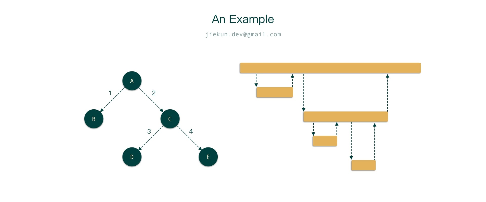
当系统每天有数百万请求，若他们都非常正常一致，通过头部采样即可筛选出其中少数几个，作为问题排查的样例。某一天，系统中出现了一些包含 Error 的调用，或者出现了很慢的调用，那需要进一步通过尾部采样捕获这些样本。
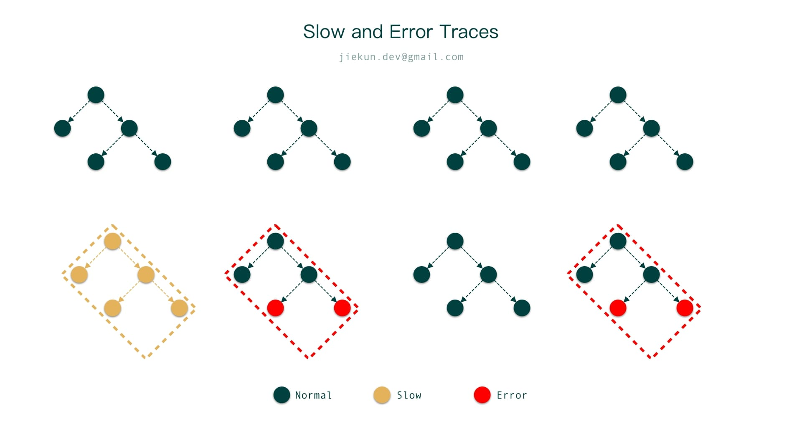
随着时间的推移，生产环境的数据越来越奇怪，如下图中框住的例子，他们比起正常调用或是多了一个 Span，或者少了一个 Span，但是执行速度很快，也不包含任何错误。这其实非常常见，例如某些逻辑分支会多执行一条 SQL，或者多一次 RPC 调用。
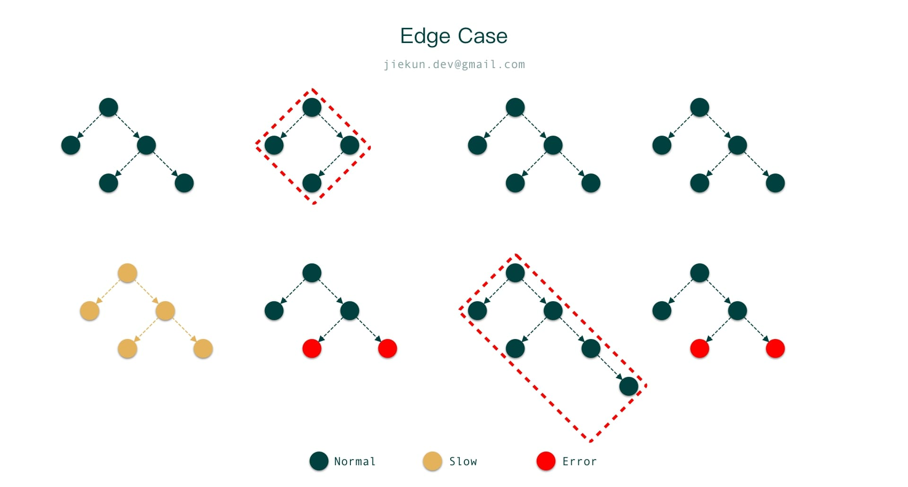
作为开发者，在观察业务健康情况的时候，自然是希望各种不同执行路径的数据都有一定量的样本，那怎么去识别这些所谓的 “执行路径不同” 的调用呢？如果我们这里的数据不是 Trace，而是二叉树，在一堆二叉树中找出与众不同的树，一种暴力的方法是：把所有数据序列化，求 MD5，再找出 MD5 不同的目标，Trace 也可以做类似的处理。
在尾部采样时，对原始的 Trace 数据，按照时间和调用父子关系把 Trace 序列化，并通过摘要计算（如 MD5）得到一个新的结果，这个结果可以称为 Type ID，它代表的是一类请求路径相同的 Trace。如果在 Collector 用简单的频率计数统计每种类型的频率，就可以让所有类型的数据都留下样本。这种方案目前在社区中已有相关提案。
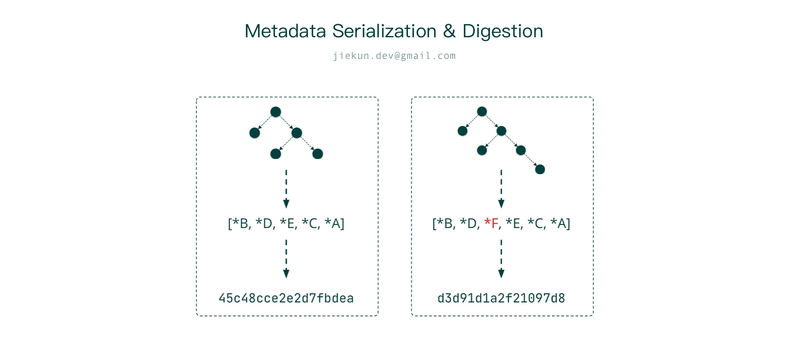
但是如果我们考虑成本，这种方案依然是基于尾部采样的，意味着整体处理流程中仍需要足够多的数据上报，这是影响 CPU 和内存用量的主要因素，其次才是遍历和分析过程。那么，有没有办法进一步减少上报的数据量呢？这或许需要从上报的 Client SDK 端入手。
以往，Trace 上下文信息都是自顶向下单向传播的，这让上层 Span 的上报决策无法受下层 Span 的状态影响，也就导致了头部采样决策信息有限的问题。因此我们很容易联想到，如果 Trace 信息能够自底向上反向传递会如何？
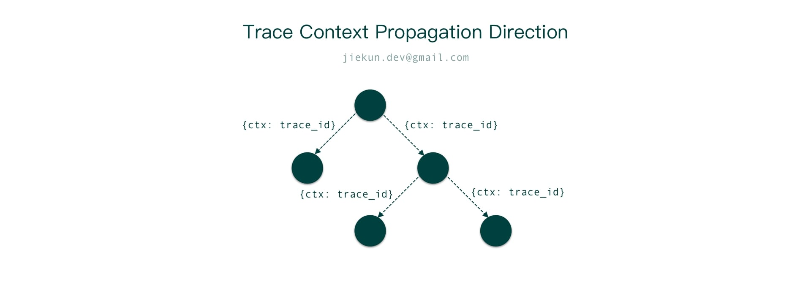
如下图所示，服务在收到调用时，执行自己的逻辑，在执行过程中如果有任何感兴趣的情况出现（例如有 Error、走入异常分支），可以不遵循头部采样决策，上报自身的 Span，并将这个情况通过 RPC Response 返回给调用方。调用方此时未结束流程，仍有机会根据响应上报 Span。若每个服务都能接受 Response 的采样提示，并返回给自己的调用方，即可形成反向采样，或者回溯采样（Retroactive Sampling）。
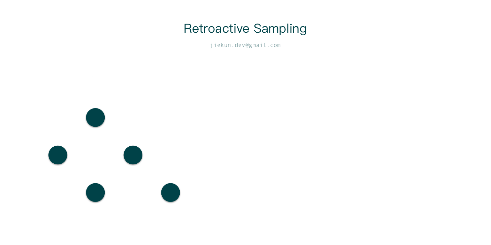
很显然，这样的采样方式带来几个好处：
- 相比头部采样，它授予了所有应用采样决策的权利；
- 相比需要收集大量数据的尾部采样，它减少了发往应用之外的数据，降低流通在整个数据采集链路中的数据量，对整体资源成本控制非常有帮助。
但是有利即有弊，这种采样无法收集到已经结束的 Span，例如上图中最左侧的服务，在全链路发生错误之前已经完成了请求的处理和响应，因此不会受到任何采样的通知，最终采样的只是完整链路的一部分。其次，这种采样高度依赖统一的通信框架或协议，可以想象，在基建不统一的情况下，想要整个企业都插装、换用协议、修改响应字段（/ Header / Metadata）是非常难推行的。
不过抛开少数障碍来看，比起头部采样和尾部采样，回溯采样的效果仍然是非常让人期待的，是否有办法绕过这些障碍将它落地呢？在探索实现的过程中，我们关注到了今年 NSDI 的一篇论文，解决的痛点和我们的目标很接近，下面来看看它的几个实现要点。
如下图所示，不同的服务位于不同的 Kubernetes 节点，每个节点上均有一个回溯采样的 Agent，在节点之外会存在协调全局的 Collector。当请求发生时，每个服务都将自己的 Span 送往 Agent，Span 中会包含采样决策。正常情况下，Agent 仅与 Collector 交换少量 Metadata，如 Trace ID - Agent ID 关系，让 Collector 知道某个 Trace 的相关数据会存在于哪些 Agent。
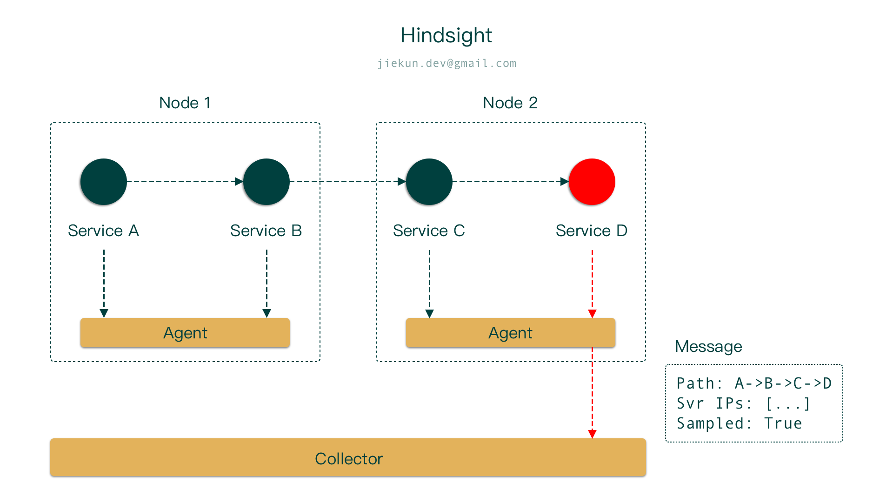
若后续流程正常，这些 Metadata 和原始数据很快会被丢弃。但若某个服务发现感兴趣的事情，期望采样时，Agnet 会将完整的数据及采样要求发往 Collector，完整数据中会包含面包屑形式的调用路径，如 A->B->C->D。Collector 收到这些信息之后，可以：
- 根据面包屑调用路径寻找对应服务的 Agnet 索要完整 Span 数据；
- 根据 Trace ID 以及之前收集到的 Metadata 寻找对应 Agent 索要完整数据。
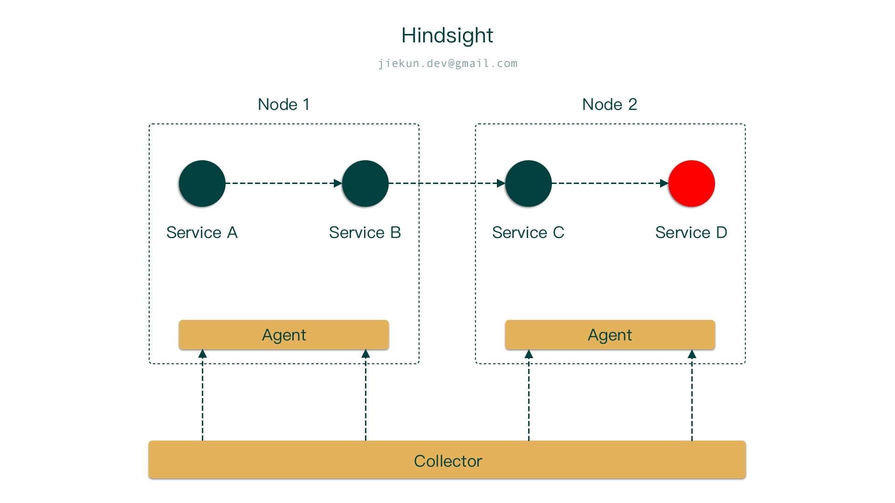
不管以何种方式，Collector 反向请求得到数据后，就可以完成回溯采样，形成一条有价值的 Trace。
这种方式的回溯采样可以节约节点之间的数据传输量，大部分时间里都只有 Metadata 被发往节点之外。当且仅当有问题发生时，Collector 才会索要完整数据。对比尾部采样，它的缺点在于将原来需要 Collector 暂存的数据转移到了应用所在节点上，“严格控制 Agnet 资源的用量” 和 “让 Agnet 尽可能留存数据” 是存在矛盾的，只能在其中作取舍。
但这种回溯采样还是非常有竞争力的，因为它同时满足两个关键点：
- 让每个应用自行决策；
- 上报数据量少。
在资源评估中，我们也可以看到它的潜力，在延迟、带宽、边缘场景覆盖率上，和各种采样方案相比都不落下风，更多的数据可以在论文中查阅。
5. 展望
采样策略自 Dapper 论文发表以来，已经发展了很多年，但是其实我们依然能看到现在主流的头部采样、尾部采样方案各有优缺点，甚至可以说短板仍然很明显。而其他的新兴的采样方案，要么依赖特定基础设施，要么还未经过大规模的实践验证，所以还有很大的发展空间。
OpenTelemetry 作为 CNCF 托管项目中，活跃度仅次于 Kubernetes 的项目，有着非常良好的社区氛围，在可观测性方向可以做的事情也很多，取决于开发者们的想象力。期望有兴趣的同学可以在社区中进一步交流采样和其他各方面的想法。
6. 现场组图
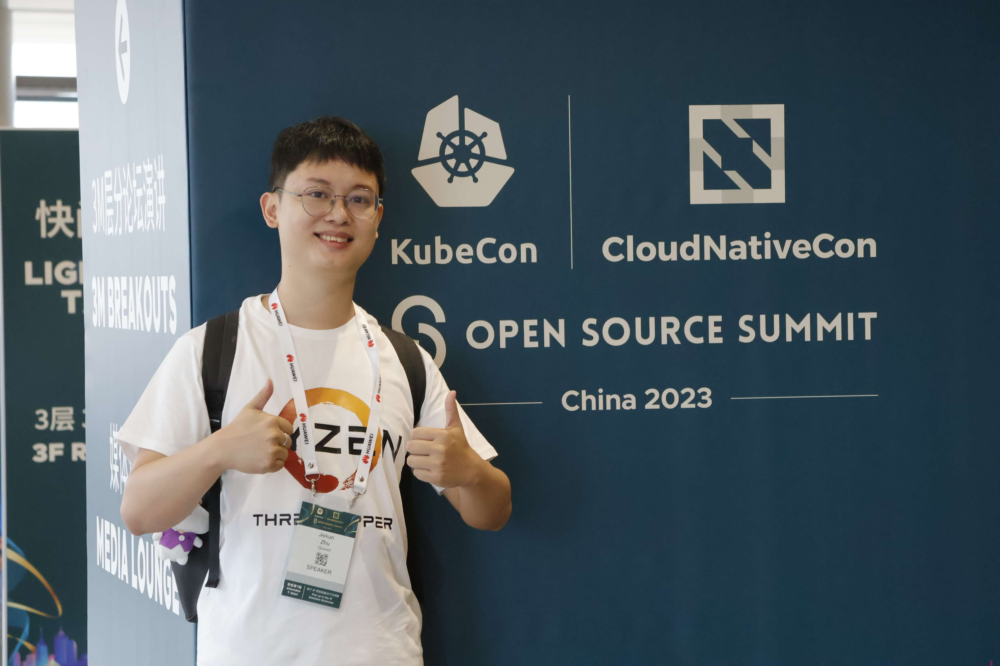
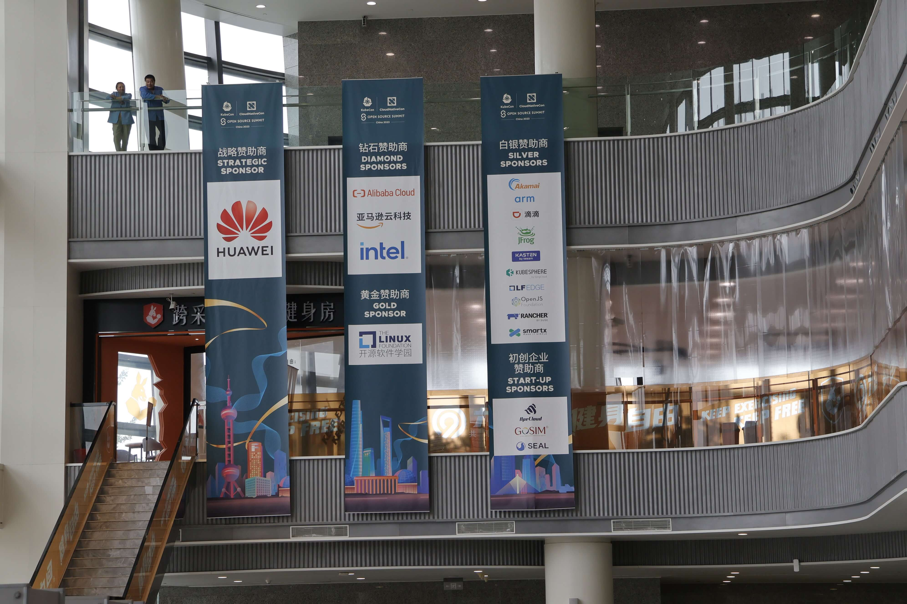
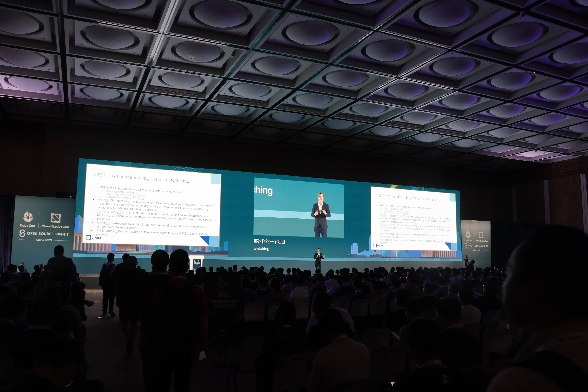